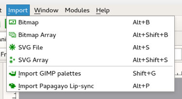

Cores no Tupi
Cores e Gradientes
O Tupi apresenta funcionalidades básicas para gestão de cores (no momento em que escrevemos, a funcionalidade de gradientes não está disponível nas versões estáveis) e algumas opções bastante interessantes mas menos visíveis.
A principal ferramenta para gestão de cores está acessível através da barra lateral esquerda. Podemos escolher a cor para o contorno (das linhas) e de preenchimento através de RGB ou HSV e valor de opacidade/transparência (Alfa).
Paletas de Cores
Para facilitar a gestão de cores, o Tupi apresenta um menu de paletas onde as diversas cores podem ser armazenadas. A forma mais simples de armazenar e utilizar uma paleta é criar um ficheiro de paleta no formato GIMP e depois importar a mesma (menu de topo Importar).
Pode utilizar o GIMP para gerar paletas a partir de imagens já existentes ou criar os seus próprios ficheiros. As paletas do GIMP são ficheiros de texto com extensão .gpl organizados de forma simples. Têm o nome da paleta no topo e as cores (valores RGB e nome da cor).
Clique aqui para descarregar o ficheiro apresentado em baixo.
Conteúdo da paleta do GIMP Default.gpl
GIMP Palette
Name: Default
#
255 0 0 Red
255 0 255 Magenta
0 0 255 Blue
0 255 255 Cyan
0 255 0 Green
255 255 0 Yellow
127 0 0 Dark Red
127 0 127 Dark Magenta<
0 0 127 Dark Blue
0 127 127 Dark Cyan
0 127 0 Dark Green
130 127 0 Dark Yellow
0 0 0 Black
25 25 25 Gray 10%
51 51 51 Gray 20%
76 76 76 Gray 30%
102 102 102 Gray 40%
127 127 127 Gray 50%
153 153 153 Gray 60%
178 178 178 Gray 70%
204 204 204 Gray 80%
229 229 229 Gray 90%
255 255 255 White
Edição externa
A integração de ferramentas externas (GIMP, MyPaint e Krita para imagens raster e Inkscape para imagens vetoriais) permite superar algumas limitações da Tupi. Através da Biblioteca (Library) é possível editar facilmente imagens raster/vetoriais em aplicações com funcionalidades de desenho e cores mais sofisticadas. Como é óbvio, estas funcionalidades não podem ser utilizadas diretamente nas imagens nativas (imagens criadas dentro do Tupi) mas pode exportar as imagens criadas no Tupi e voltar a importar.